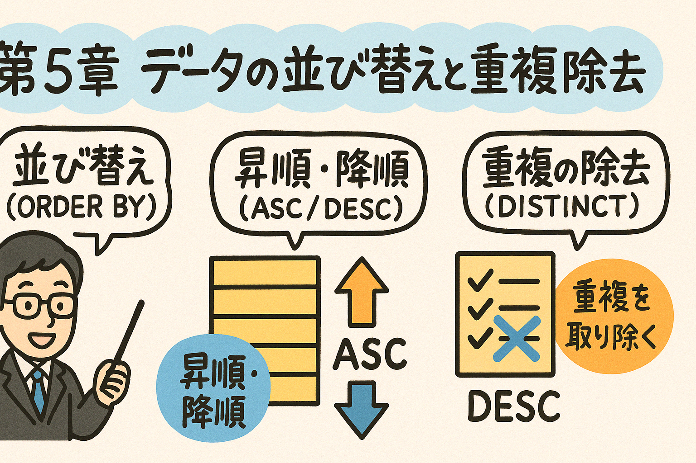

この第5章では、データの並び替えと重複除去の方法を学習します。クエリ結果を特定の順序で表示する方法と、結果から重複行を除去する方法について解説します。
データベースからデータを検索する際、特定の順序で結果を表示したり、重複するデータを除去したりすることがよくあります。SQLではORDER BY句とDISTINCT句を使用することで、これらの操作を簡単に実行できます。この章では、これらの機能の使用方法について詳しく学びます。
ORDER BY句は、クエリの結果セットを特定の列または式に基づいて並び替える（ソートする）ために使用します。ORDER BY句は常にSELECT文の最後に配置されます。
SELECT column1, column2, ...
FROM table_name
ORDER BY column1;
例として、「products」テーブルから全ての商品を商品名でソートして取得する場合：
SELECT product_id, product_name, price
FROM products
ORDER BY product_name;
以下の「products」テーブルがあるとします：
| product_id | product_name | category_id | price | stock |
|---|---|---|---|---|
| 1 | ノートパソコン | 1 | 89000 | 10 |
| 2 | スマートフォン | 1 | 60000 | 15 |
| 3 | ヘッドフォン | 2 | 15000 | 20 |
| 4 | タブレット | 1 | 45000 | 8 |
| 5 | スピーカー | 2 | 9800 | 25 |
商品名でソートする場合のクエリとその結果：
SELECT product_id, product_name, price
FROM products
ORDER BY product_name;
結果：
| product_id | product_name | price |
|---|---|---|
| 3 | ヘッドフォン | 15000 |
| 2 | スマートフォン | 60000 |
| 5 | スピーカー | 9800 |
| 4 | タブレット | 45000 |
| 1 | ノートパソコン | 89000 |
ORDER BY句では、並び替えの方向を指定することができます。ASC（昇順）とDESC（降順）の2つのキーワードを使用します。
SELECT column1, column2, ...
FROM table_name
ORDER BY column1 ASC|DESC;
SELECT product_id, product_name, price
FROM products
ORDER BY price DESC;
結果：
| product_id | product_name | price |
|---|---|---|
| 1 | ノートパソコン | 89000 |
| 2 | スマートフォン | 60000 |
| 4 | タブレット | 45000 |
| 3 | ヘッドフォン | 15000 |
| 5 | スピーカー | 9800 |
データ型によって並び替えの挙動が異なります：
PostgreSQLでは、NULL値の並び順を制御するためにNULLS FIRST またはNULLS LASTを指定できます。
SELECT column1, column2, ...
FROM table_name
ORDER BY column1 ASC NULLS FIRST;
SELECT column1, column2, ...
FROM table_name
ORDER BY column1 DESC NULLS LAST;
在庫数（stock）にNULL値が含まれる場合のソート：
SELECT product_id, product_name, stock
FROM products
ORDER BY stock ASC NULLS LAST;
ORDER BY句では、複数の列を指定してソートすることができます。これにより、一次ソートと二次ソート（またはそれ以上）を定義できます。
SELECT column1, column2, ...
FROM table_name
ORDER BY column1 ASC|DESC, column2 ASC|DESC, ...;
最初に指定した列（column1）で一次ソートが行われ、その値が同じレコード間では二次ソートの列（column2）によってさらに並び替えられます。
まずカテゴリ（category_id）で昇順ソートし、同じカテゴリ内では価格（price）で降順にソートします：
SELECT product_id, product_name, category_id, price
FROM products
ORDER BY category_id ASC, price DESC;
結果：
| product_id | product_name | category_id | price |
|---|---|---|---|
| 1 | ノートパソコン | 1 | 89000 |
| 2 | スマートフォン | 1 | 60000 |
| 4 | タブレット | 1 | 45000 |
| 3 | ヘッドフォン | 2 | 15000 |
| 5 | スピーカー | 2 | 9800 |
PostgreSQLでは、SELECT文で指定した列の順序（位置）を使用してソートすることも可能です。
SELECT product_id, product_name, price
FROM products
ORDER BY 3 DESC; -- priceは3番目の列なのでこれは「ORDER BY price DESC」と同じ
DISTINCT句は、クエリ結果から重複する行を除去するために使用します。重複とは、SELECT文で指定したすべての列の値が同じである行のことを指します。
SELECT DISTINCT column1, column2, ...
FROM table_name;
SELECT DISTINCT category_id
FROM products;
結果：
| category_id |
|---|
| 1 |
| 2 |
DISTINCTは指定したすべての列の組み合わせが重複する行を除去します。
SELECT DISTINCT column1, column2
FROM table_name;
以下のクエリは、カテゴリIDと在庫があるかどうか（stock > 10）の組み合わせのユニークなリストを取得します：
SELECT DISTINCT category_id, stock > 10 AS has_sufficient_stock
FROM products;
結果：
| category_id | has_sufficient_stock |
|---|---|
| 1 | false |
| 1 | true |
| 2 | true |
DISTINCTはCOUNT関数と組み合わせて、ユニークな値の数をカウントすることもできます。
SELECT COUNT(DISTINCT column1) AS unique_count
FROM table_name;
SELECT COUNT(DISTINCT category_id) AS category_count
FROM products;
結果：
| category_count |
|---|
| 2 |
PostgreSQLは標準SQLのDISTINCT機能に加えて、DISTINCT ON拡張機能を提供しています。DISTINCT ONを使用すると、特定の列の値ごとに最初の行だけを返すことができます。
SELECT DISTINCT ON (column1) column1, column2, ...
FROM table_name
ORDER BY column1, column2, ...;
DISTINCT ON句の中の列（複数可）ごとにグループ化され、各グループからORDER BY句に従ってソートされた最初の行が選択されます。
以下のクエリは、各カテゴリで最も高価な商品を1つずつ取得します：
SELECT DISTINCT ON (category_id) category_id, product_name, price
FROM products
ORDER BY category_id, price DESC;
結果：
| category_id | product_name | price |
|---|---|---|
| 1 | ノートパソコン | 89000 |
| 2 | ヘッドフォン | 15000 |
上記のクエリでは、カテゴリID 1の中で最も高価な商品（ノートパソコン）とカテゴリID 2の中で最も高価な商品（ヘッドフォン）が選択されています。
DISTINCT ONは複数の列に適用することもできます：
SELECT DISTINCT ON (column1, column2) column1, column2, column3, ...
FROM table_name
ORDER BY column1, column2, column3 DESC;
SELECT DISTINCT ON (category_id, stock > 10)
category_id,
stock > 10 AS has_sufficient_stock,
product_name,
price
FROM products
ORDER BY category_id, stock > 10, price ASC;
以下の「orders」テーブルがあります：
| order_id | customer_id | order_date | total_amount | status |
|---|---|---|---|---|
| 1 | 101 | 2024-03-15 | 25000 | 完了 |
| 2 | 102 | 2024-03-16 | 15000 | 処理中 |
| 3 | 101 | 2024-03-18 | 35000 | 完了 |
| 4 | 103 | 2024-03-20 | 5000 | 完了 |
| 5 | 102 | 2024-03-22 | 12000 | 処理中 |
以下のクエリを作成してください：
以下のテーブルを使って問題に答えてください：
| order_item_id | order_id | product_id | quantity | unit_price |
|---|---|---|---|---|
| 1 | 1 | 1 | 1 | 89000 |
| 2 | 2 | 3 | 2 | 15000 |
| 3 | 3 | 1 | 1 | 89000 |
| 4 | 3 | 2 | 1 | 60000 |
| 5 | 4 | 5 | 1 | 9800 |
| 6 | 5 | 4 | 1 | 45000 |
| 7 | 5 | 3 | 1 | 15000 |
以下のクエリを作成してください：
「products」テーブルと「order_items」テーブルを使用して：
ヒント: JOINやGROUP BY、COUNT関数、DISTINCT ONなどを組み合わせて使用する必要があるかもしれません。
以下の問題に答えて、第5章の内容の理解度を確認しましょう。
問題1: ORDER BY句がSELECT文で省略された場合、結果はどのように並び替えられますか？
問題2: 次のSQLステートメントはどのような結果を返しますか？
SELECT product_name, price
FROM products
ORDER BY 2 DESC;
問題3: DISTINCT句の正しい使い方は次のうちどれですか？
問題4: PostgreSQLのDISTINCT ON機能について正しい説明はどれですか？
問題5: 次のSQLステートメントは何を行いますか？
SELECT COUNT(DISTINCT category_id) FROM products;
この章では、SQLにおけるデータの並び替えと重複除去の方法について学びました。ORDER BY句を使用してクエリ結果を特定の順序で表示する方法と、DISTINCT句を使用して重複する行を除去する方法を理解することができました。
また、PostgreSQLに特有のDISTINCT ON機能を使って、グループごとに代表的な行を取得する方法も学びました。
次の章では、以下のトピックについて学習します：